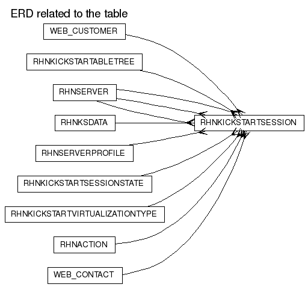

RHNKICKSTARTSESSION
DDL scriptColumns
| Name | Type | Nullable | Default value | Comment |
|---|
| ID | NUMBER(38) | N | | |
| KICKSTART_ID | NUMBER(38) | Y | | |
| KICKSTART_MODE | VARCHAR2(32) | Y | | |
| KSTREE_ID | NUMBER(38) | Y | | |
| ORG_ID | NUMBER(38) | N | | |
| SCHEDULER | NUMBER(38) | Y | | |
| OLD_SERVER_ID | NUMBER(38) | Y | | |
| NEW_SERVER_ID | NUMBER(38) | Y | | |
| HOST_SERVER_ID | NUMBER(38) | Y | | |
| ACTION_ID | NUMBER(38) | Y | | |
| STATE_ID | NUMBER(38) | N | | |
| SERVER_PROFILE_ID | NUMBER(38) | Y | | |
| LAST_ACTION | DATE | N | (sysdate) | |
| PACKAGE_FETCH_COUNT | NUMBER(38) | N | (0) | |
| LAST_FILE_REQUEST | VARCHAR2(2048) | Y | | |
| SYSTEM_RHN_HOST | VARCHAR2(256) | Y | | |
| KICKSTART_FROM_HOST | VARCHAR2(256) | Y | | |
| DEPLOY_CONFIGS | CHAR(1) | N | ('N') | |
| VIRTUALIZATION_TYPE | NUMBER(38) | N | | |
| CLIENT_IP | VARCHAR2(15) | Y | | |
| CREATED | DATE | N | (sysdate) | |
| MODIFIED | DATE | N | (sysdate) | |
Primary key:
| Constraint Name | Columns |
|---|
| RHN_KS_SESSION_ID_PK | ID
|
Foreign Keys:
Options:
| Option | Settings |
|---|
| Tablespace | DATA_TBS |
| Index Organized | No |
| Generated by Oracle | No |
| Clustered | No |
| Nested | No |
| Temporary | No |
Indexes:
Referenced by:
Triggers
RHN_KSSCRIPT_MOD_TRIG
Legend: string keyword reserved word operator
CREATE TRIGGER
rhn_ksscript_mod_trig
before insert or update on rhnKickstartSession
for each row
REFERENCING NEW AS NEW OLD AS OLD
begin
:new.modified := sysdate;
end rhn_ksscript_mod_trig;
RHN_KS_SESSION_HISTORY_TRIGGER
Legend: string keyword reserved word operator
CREATE TRIGGER
rhn_ks_session_history_trigger
after insert or update on rhnKickstartSession
for each row
REFERENCING NEW AS NEW OLD AS OLD
begin
if inserting or (updating and :new.state_id != :old.state_id) then
insert into rhnKickstartSessionHistory (
id, kickstart_session_id, action_id, state_id
) values (
rhn_ks_sessionhist_id_seq.nextval,
:new.id,
:new.action_id,
:new.state_id
);
end if;
end;
RHN_KS_SESSION_MOD_TRIG
Legend: string keyword reserved word operator
CREATE TRIGGER
rhn_ks_session_mod_trig
before insert or update on rhnKickstartSession
for each row
REFERENCING NEW AS NEW OLD AS OLD
begin
:new.modified := sysdate;
end;